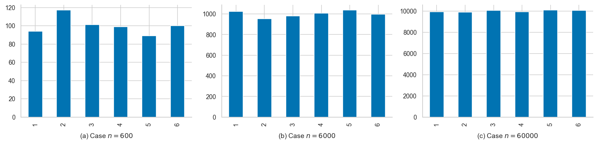

Section 2.2 — Multiple random variable
Contents
Section 2.2 — Multiple random variable¶
This notebook contains all the code examples from Section 2.2 Multiple random variables in the No Bullshit Guide to Statistics.
Notebook setup¶
# load Python modules
import numpy as np
import pandas as pd
import seaborn as sns
import matplotlib.pyplot as plt
# Figures setup
sns.set_theme(
context="paper",
style="whitegrid",
palette="colorblind",
rc={'figure.figsize': (7,4)},
)
%config InlineBackend.figure_format = 'retina'
# # silence annoying warnings
# import warnings; warnings.filterwarnings('ignore')
# set random seed for repeatability
np.random.seed(42)
Coin tosses for n=100, n=1000, and n=10000¶
import numpy as np
np.random.seed(15)
import pandas as pd
import matplotlib.pyplot as plt
from scipy.stats.distributions import randint
rvC = randint(0, 2)
filename = "figures/panel_n_coin_flips.pdf"
with plt.rc_context({"figure.figsize":(12,3)}):
fig, axs = plt.subplots(1, 3)
ax1, ax2, ax3 = axs
n = 100
flips = rvC.rvs(n)
s = pd.Series(flips).replace(1, "heads").replace(0, "tails")
# print(f"Case {n=}")
# print(s.value_counts().sort_index())
s.value_counts().sort_index().plot(kind="bar", rot=0, ax=ax1)
title1 = f"(a) Case $n={n}$"
ax1.set_title(title1, y=0, pad=-30)
sns.despine(top=True, right=True, ax=ax1)
n = 1000
flips = rvC.rvs(n)
s = pd.Series(flips).replace(1, "heads").replace(0, "tails")
# print(f"Case {n=}")
# print(s.value_counts().sort_index())
s.value_counts().sort_index().plot(kind="bar", rot=0, ax=ax2)
title2 = f"(b) Case $n={n}$"
ax2.set_title(title2, y=0, pad=-30)
sns.despine(top=True, right=True, ax=ax2)
n = 10000
flips = rvC.rvs(n)
s = pd.Series(flips).replace(1, "heads").replace(0, "tails")
# print(f"Case {n=}")
# print(s.value_counts().sort_index())
s.value_counts().sort_index().plot(kind="bar", rot=0, ax=ax3)
title3 = f"(c) Case $n={n}$"
ax3.set_title(title3, y=0, pad=-30)
sns.despine(top=True, right=True, ax=ax3)
fig.tight_layout()
fig.savefig(filename, dpi=300, bbox_inches="tight", pad_inches=0)
---------------------------------------------------------------------------
FileNotFoundError Traceback (most recent call last)
Input In [4], in <cell line: 14>()
46 sns.despine(top=True, right=True, ax=ax3)
48 fig.tight_layout()
---> 49 fig.savefig(filename, dpi=300, bbox_inches="tight", pad_inches=0)
File /opt/hostedtoolcache/Python/3.8.12/x64/lib/python3.8/site-packages/matplotlib/figure.py:3046, in Figure.savefig(self, fname, transparent, **kwargs)
3042 for ax in self.axes:
3043 stack.enter_context(
3044 ax.patch._cm_set(facecolor='none', edgecolor='none'))
-> 3046 self.canvas.print_figure(fname, **kwargs)
File /opt/hostedtoolcache/Python/3.8.12/x64/lib/python3.8/site-packages/matplotlib/backend_bases.py:2319, in FigureCanvasBase.print_figure(self, filename, dpi, facecolor, edgecolor, orientation, format, bbox_inches, pad_inches, bbox_extra_artists, backend, **kwargs)
2315 try:
2316 # _get_renderer may change the figure dpi (as vector formats
2317 # force the figure dpi to 72), so we need to set it again here.
2318 with cbook._setattr_cm(self.figure, dpi=dpi):
-> 2319 result = print_method(
2320 filename,
2321 facecolor=facecolor,
2322 edgecolor=edgecolor,
2323 orientation=orientation,
2324 bbox_inches_restore=_bbox_inches_restore,
2325 **kwargs)
2326 finally:
2327 if bbox_inches and restore_bbox:
File /opt/hostedtoolcache/Python/3.8.12/x64/lib/python3.8/site-packages/matplotlib/backend_bases.py:1648, in _check_savefig_extra_args.<locals>.wrapper(*args, **kwargs)
1640 _api.warn_deprecated(
1641 '3.3', name=name, removal='3.6',
1642 message='%(name)s() got unexpected keyword argument "'
1643 + arg + '" which is no longer supported as of '
1644 '%(since)s and will become an error '
1645 '%(removal)s')
1646 kwargs.pop(arg)
-> 1648 return func(*args, **kwargs)
File /opt/hostedtoolcache/Python/3.8.12/x64/lib/python3.8/site-packages/matplotlib/_api/deprecation.py:389, in delete_parameter.<locals>.wrapper(*inner_args, **inner_kwargs)
384 @functools.wraps(func)
385 def wrapper(*inner_args, **inner_kwargs):
386 if len(inner_args) <= name_idx and name not in inner_kwargs:
387 # Early return in the simple, non-deprecated case (much faster than
388 # calling bind()).
--> 389 return func(*inner_args, **inner_kwargs)
390 arguments = signature.bind(*inner_args, **inner_kwargs).arguments
391 if is_varargs and arguments.get(name):
File /opt/hostedtoolcache/Python/3.8.12/x64/lib/python3.8/site-packages/matplotlib/backends/backend_pdf.py:2783, in FigureCanvasPdf.print_pdf(self, filename, dpi, bbox_inches_restore, metadata)
2781 file = filename._file
2782 else:
-> 2783 file = PdfFile(filename, metadata=metadata)
2784 try:
2785 file.newPage(width, height)
File /opt/hostedtoolcache/Python/3.8.12/x64/lib/python3.8/site-packages/matplotlib/backends/backend_pdf.py:654, in PdfFile.__init__(self, filename, metadata)
652 self.original_file_like = None
653 self.tell_base = 0
--> 654 fh, opened = cbook.to_filehandle(filename, "wb", return_opened=True)
655 if not opened:
656 try:
File /opt/hostedtoolcache/Python/3.8.12/x64/lib/python3.8/site-packages/matplotlib/cbook/__init__.py:451, in to_filehandle(fname, flag, return_opened, encoding)
449 fh = bz2.BZ2File(fname, flag)
450 else:
--> 451 fh = open(fname, flag, encoding=encoding)
452 opened = True
453 elif hasattr(fname, 'seek'):
FileNotFoundError: [Errno 2] No such file or directory: 'figures/panel_n_coin_flips.pdf'
Dice rolls 600 6000 60000¶
import numpy as np
np.random.seed(5)
import pandas as pd
import matplotlib.pyplot as plt
from scipy.stats.distributions import randint
rvD = randint(1, 7)
filename = "figures/panel_n_dice_rolls.pdf"
with plt.rc_context({"figure.figsize":(12,3)}):
fig, axs = plt.subplots(1, 3)
ax1, ax2, ax3 = axs
n = 600
rolls = rvD.rvs(n)
ds = pd.Series(rolls)
# print(f"Case {n=}")
# print(ds.value_counts().sort_index())
ds.value_counts().sort_index().plot(kind="bar", ax=ax1)
title1 = f"(a) Case $n={n}$"
ax1.set_title(title1, y=0, pad=-30)
sns.despine(top=True, right=True, ax=ax1)
n = 6000
rolls = rvD.rvs(n)
ds = pd.Series(rolls)
# print(f"Case {n=}")
# print(ds.value_counts().sort_index())
ds.value_counts().sort_index().plot(kind="bar", ax=ax2)
title2 = f"(b) Case $n={n}$"
ax2.set_title(title2, y=0, pad=-30)
sns.despine(top=True, right=True, ax=ax2)
n = 60000
rolls = rvD.rvs(n)
ds = pd.Series(rolls)
# print(f"Case {n=}")
# print(ds.value_counts().sort_index())
ds.value_counts().sort_index().plot(kind="bar", ax=ax3)
title3 = f"(c) Case $n={n}$"
ax3.set_title(title3, y=0, pad=-30)
sns.despine(top=True, right=True, ax=ax3)
fig.tight_layout()
fig.savefig(filename, dpi=300, bbox_inches="tight", pad_inches=0)
